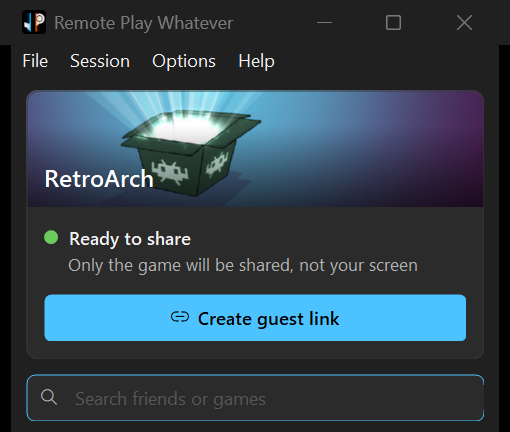

Steam Remote Play Together for any game
It starts Remote Play Together for games that don't support it, and for non-Steam games such as emulators. Invite Steam friends, or send a link that anyone can join, even without a Steam account.
Works with the current Steam client. The original RemotePlayWhatever (version 0.2.14) is broken with current Steam and hasn't been updated since April 2026. This maintained version includes the community fix and keeps getting updates.
Download RemotePlayWhateverFree and open source (MIT License) · Windows, Steam Deck / Linux and macOS

RemotePlayWhatever.exe. No installer, no admin rights. It keeps itself up to date.Older builds and release notes are on the releases page. Step-by-step install notes for each system are in the README.
The original RemotePlayWhatever (version 0.2.14) doesn't work with current Steam clients and hasn't been updated since April 2026. This maintained version includes the community fix and works with the current Steam client.
It uses Steam's internal functions, and Steam updates moved them. The original finds them by their position, so it calls the wrong ones and crashes or does nothing. This version finds them by name (the fix from pull request #289 by okabeeer), so most Steam updates don't break it.
No. With Remote Play Together only the host needs the game. Steam friends join from Steam, and anyone with a guest link joins with the free Steam Link app, even without a Steam account.
Yes, use the Linux AppImage in Desktop Mode and start your game from Steam in Desktop Mode too.
The app isn't code-signed, so Windows SmartScreen warns about it: click More info, then Run anyway. It's open source under the MIT License, and every download is built by GitHub Actions from the public source code.